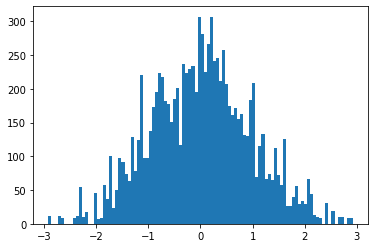
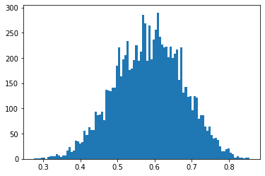
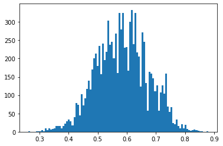

Note: This blog post is still a rough draft. Read on with caution.
Most probabilistic programming languages on the market tend to focus on a single inference algorithm as their bread and butter: Stan promulgated the use of Hamiltonian Monte Carlo for inference of complicated hierarchical models, pyro’s API focuses heavily on stochastic variational inference, etc. However, they usually expose many ways to implement other inference algorithms, usually by exploiting execution traces.
Having a varied selection of inference algorithms to try out is advantagous– some algorithms are exact while others are merely approximate, some are slow to compute, while others are very fast. Also, many algorithms exploit dependency structures in the generative models which make them more robust to modality issues or exponential combinatorial explosions. In this blog post we will focus on trying to understand pyro’s importance sampling algorithms, eventually culminating on understanding the pyro.infer.CSIS module on inference compilation.
empirical
First we describe the Empirical distribution.
import itertools
from abc import abstractmethod
import torch
import torch.nn as nn
from torch.distributions import constraints
import pyro
import pyro.poutine as poutine
import pyro.distributions as dist
from pyro.distributions.torch import Categorical
from pyro.distributions.torch_distribution import TorchDistributionIn essense, an empirical distribution (derived from a dataset \(\mathcal{D}\)) is a histogram without buckets. Instead, points are “weighted” as a proxy of binning. Mathematically, an empirical distribution can be described by the measure
\[ \mu_\text{emp}(\mathcal{D}) = \sum_{x\in\mathcal{D}} \omega_x\delta_x \]
where \(\delta_x\) is the Dirac measure with mass concentrated at the point \(x\).
As with all distributions in modern PPLs, we just need to implement sample to sample a value from the empirical, and log_prob to retrieve the log weight of a value sampled from the distribution.
class Empirical(TorchDistribution):
def __init__(self, samples, log_weights):
self._samples = samples
self._log_weights = log_weights
sample_shape, weight_shape = samples.size(), log_weights.size()
assert sample_shape >= weight_shape
# the shape of the points are given by the remainder of sample_shape
event_shape = sample_shape[len(weight_shape):]
# we will represent the measure by a categorical distribution
self._categorical = Categorical(logits=self._log_weights)
super().__init__(batch_shape=weight_shape[:-1],
event_shape=event_shape)
def sample(self, sample_shape=torch.Size()):
# sample idx from the categorical
idx = self._categorical.sample(sample_shape)
samples = self._samples.gather(0, idx)
return samples.reshape(sample_shape + samples.shape[1:])
def log_prob(self, value):
# get the sample that matches value
sel_mask = self._samples.eq(value)
# get weights that correspond to sample using mask
wgts = (self._categorical.probs * sel_mask).sum(dim=-1).log()
return wgtsIf one needs a reminder about how tensor dimensions are used in probabilistic programming, I recommend taking a read of this blog post of Eric Ma.
An Empirical distribution is ultimately a reification of a sampling distribution. Given samples from a normal distribution
> samples = torch.randn(1000)
> log_wgts = torch.ones(1000)
>
> emp = Empirical(samples, log_wgts)
> emp_samples = [emp.sample().detach().item() for _ in range(10000)]we can get a visualization of our empirical distribution as the histogram

posterior predictives
The point of probabilistic programming is to make it easy to perform inference of latent variables and parameters in generative models. A PPL is equipped with a suite of inference algorithms that allow us to determine a posterior distribution over unobserved variables, given a prior model and a set of observations.
In pyro, a prior on data is described by a model, such as:
def model(data):
p = pyro.sample("p", dist.Beta(2.0, 2.0))
with pyro.plate("data", len(data)):
pyro.sample("obs", dist.Bernoulli(p), obs=data)As a generative story, this model describes the prior
\[ \begin{align} p &\sim \text{Beta}(2, 2) \\ x_i | p &\sim \text{Bernoulli}(p) \end{align} \]
Now, given a dataset, say \(\mathcal{D}=\{1,0,1,1,1\}\), what is the posterior? That is, we want to compute the distribution over latents (here, it is p) that best describe the observed data \(\mathcal{D}\). This is the inference process. pyro is equipped with a number of such algorithms, but the one it is specially designed for is variational inference, in which we construct a guide \(q(z\mid x;\phi)\) and use stochastic optimization on an information-theoretic bound to choose parameters \(\phi\) that make the resulting guide a good approximation to the true posterior of the model.
For example, a guide we can use for the above model is given by \(q(p\mid x;\alpha,\beta) =\text{Beta}(p\mid \alpha,\beta)\):
def guide(data):
a = pyro.param("a", torch.tensor(1.0), constraint=constraints.positive)
b = pyro.param("b", torch.tensor(1.0), constraint=constraints.positive)
pyro.sample("p", dist.Beta(a, b))Once we’ve performed the stochastic variational inference procedure and determined the best parameters a and b above, we get a guide function that performs as the “best” (that is, maximal entropy) approximation to the true posterior of the latent variables in the model. How do we get a grasp of this posterior as a distribution, though?
Sample! In PPLs, we often are concerned with the space of execution traces that are produced by a generative story– that is, the sequence of all stochastic choices and conditions encountered during a single execution of the model. pyro captures the traces automatically in the background using an algebraic effects system called poutine. We described algebraic effect systems and their use in Pyro in previous posts on this blog.
For example, to capture a single execution trace of the model, we just need to wrap the model in an effect handler trace that will keep a logged record of the execution of every pyro.sample site that gets activated in the program.
> tr = poutine.trace(model)
# to execute the model once, returning a single trace
> data = torch.tensor([1, 0, 1, 1, 0]).type(torch.float32).view(-1,1)
> model_tr = tr.get_trace(data)
> model_tr.nodes
OrderedDict([('_INPUT',
{'name': '_INPUT',
'type': 'args',
'args': (tensor([[1.],
[0.],
[1.],
[1.],
[0.]]),),
'kwargs': {}}),
('p',
{'type': 'sample',
'name': 'p',
'fn': Beta(),
'is_observed': False,
'args': (),
'kwargs': {},
'value': tensor(0.3828),
'infer': {},
'scale': 1.0,
'mask': None,
'cond_indep_stack': (),
'done': True,
'stop': False,
'continuation': None}),
...Given traces from the approximate posterior (guide), we can sample from the generative model with the latents tuned to their posterior distributional values by replaying a trace of the guide in the model, and capturing the resulting values in a new trace.
class Predictor(nn.Module):
def __init__(self, model, guide):
super(Predictor, self).__init__()
self.model = model
self.guide = guide
def forward(self, *args, **kwargs):
samples = {}
# get an execution trace from the guide, to sample posterior values of latents
guide_tr = poutine.trace(self.guide).get_trace(*args, **kwargs)
# run an execution of the model, while replacing all latent site
# values with guide trace
model_tr = poutine.trace(
poutine.replay(self.model, guide_tr)).get_trace(*args, **kwargs)
for site in model_tr.stochastic_nodes:
samples[site] = model_tr.nodes[site]["value"]
return samplesGetting a joint-prediction involves just running the model
> predictions = Predictor(model, guide)
> predictions(data)
{'p': tensor(0.6442, grad_fn=<SelectBackward>),
'data': tensor([0, 1, 2, 3, 4])}Why is this called Predictor? Because this describes the posterior predictive distribution– it is a function that can actually produce predictions from the generative model, where the latents are now distributed according to the approximate posterior given by the guide.
If we want to isolate the marginal distribution of a single sampling site (let’s say we only care about the posterior for p), we can sample a bunch of traces from the predictive and only extract the values corresponding to the site in question.
class VariationalMarginal(Empirical):
def __init__(self, predictor, site, *args, n_traces=1000, **kwargs):
self.predictor = predictor
self.site = site
self.n_traces = n_traces
self._samples = []
self._weights = []
# generate samples and weights
self._generate(*args, **kwargs)
# stack samples, weights
self._samples = torch.stack(self._samples, dim=0)
self._weights = torch.stack(self._weights, dim=0).squeeze(-1)
super(VariationalMarginal, self).__init__(self._samples, self._weights)
def _generate(self, *args, **kwargs):
for _ in range(self.n_traces):
sample = self.predictor(*args, **kwargs)
# project predictive trace to site
site_val = sample[self.site]
self._samples.append(site_val)
self._weights.append(torch.tensor([1.0]))Running this is like the predictor above:
> p_marginal = VariationalMarginal(predictions, "p", data)
> p_samples = [p_marginal().detach().item() for _ in range(10000)]Of course, we didn’t train the guide so the resulting histogram should look uniform, and overall very useless for us.
importance sampling
Stochastic variational inference is one of the main ways to produce a good posterior distribution in pyro, but it isn’t the only way. Importance sampling is an inference method of computing the posterior, by using a guide as a proposal distribution for a Monte Carlo sampling of execution traces that directly come from the posterior.
In this way, the importance sampler represents the posterior not as its own generative model, but as a collection of traces, which in pyro is formalized as the abstract TracePosterior class.
class TracePosterior:
def __init__(self, n_traces):
self.n_traces = n_traces
self.exec_traces = []
self.log_weights = []
self.chain_idx = []
# generator over traces and weights
@abstractmethod
def _traces(self, *args, **kwargs):
raise NotImplementedError
def run(self, *args, **kwargs):
with poutine.block():
for i, (tr, log_wgt) in enumerate(self._traces(*args, **kwargs)):
self.exec_traces.append(tr)
self.log_weights.append(log_wgt)
self.chain_idx.append(i)
# represent trace sampler as categorical
self._categorical = Categorical(logits=torch.tensor(self.log_weights))
return selfAn importance sampler (represented in the Importance class) is a TracePosterior in which the way we generate traces is via the importance sampling method, which we recall here.
In importance sampling, our goal is to sample from a distribution \(x\sim p(x)\) (here, \(p\) is our model as prior). This may be difficult, so instead we sample from a proposal \(x\sim q(x)\). This may introduce a bias, so we attach a weight that acts as metadata denoting how confident the sampler is that it’s a sample from \(p\). So for example, for \(x\) our weight would be
\[ \omega_x = \frac{q(x)}{p(x)} \]
Assuming a number of samples \(x_i\sim q(x)\) for \(i=1..N\), the empirical distribution measure
\[ \mu_\text{importance} = \sum_{i=1}^N \omega_i \delta_{x_i} \to p(x) \]
To represent this in pyro, we simulate a trace from the guide (proposal) and compute the importance weight by replaying that trace in the model and computing log-joints (which is also provided in the computed execution traces).
class Importance(TracePosterior):
def __init__(self, model, guide, n_samples=1000):
super().__init__(n_traces=n_samples)
self.model = model
self.guide = guide
def _traces(self, *args, **kwargs):
for _ in range(self.n_traces):
# sample a trace from the proposal
guide_tr = poutine.trace(self.guide).get_trace(*args, **kwargs)
# replay trace in model for importance weight
model_tr = poutine.trace(
poutine.replay(self.model, guide_tr)
).get_trace(*args, **kwargs)
# compute log importance weight by computing log-joints
log_wgt = model_tr.log_prob_sum() - guide_tr.log_prob_sum()
yield (guide_tr, log_wgt)Running the importance sampler will load a collection of traces from the guide and assign importance weights to them.
> importance_sampler = Importance(model, guide, n_samples=10000)
> importance_sampler.run(data)The resulting lines of code extracts the p-marginal distribution from the importance-weighted guide traces.
# grab posterior values of p in execution traces
> is_p_marginal = [tr.nodes["p"]["value"] for tr in importance_sampler.exec_traces]
> is_p_marginal_samples = torch.stack(is_p_marginal, dim=0)
> is_p_marginal_log_wgt = torch.stack(importance_sampler.log_weights, dim=0)
# form empirical marginal
> emp_is_p_marg = Empirical(is_p_marginal_samples, is_p_marginal_log_wgt)
> emp_samples = [emp_is_p_marg().detach().item() for _ in range(10000)]The empirical distribution of this marginal has the following histogram:

Being that our prior is \(\text{Beta}(2, 2)\) and we saw in our dataset 3 successes, 2 failures, the posterior should analytically be a \(\text{Beta}(5, 4)\) with mean at \(5/9=0.555...\), which seems to agree with the marginal distribution above.
inference compilation
Importance sampling gives an exact posterior, but suffers from a similar problem to variational inference: the choice of proposal distribution is a hard one to make, and greatly affects the quality of the posterior samples generated. For example, we often desire proposal distributions for importance sampling to have thicker tails than the target distribution, otherwise they don’t capture tail behavior well. This can be crucial, especially in high dimensions where probability mass tends to be concentrated away from the bulk.
However, recent work in deep learning has shown that deep neural networks have the ability to expressively focus on high-density portions of generative models, effectively making them generalize well even in high dimensional settings. An obvious question that comes from this is: can we use deep neural nets to learn good proposal distributions for importance sampling? This is the idea behind inference compilation. For more details, see the paper of Wood et al.
In a nutshell, we wish to construct an expressive guide (proposal distribution) \(q(z\mid \text{NN}(x;\phi))\) where \(\text{NN}(-;\phi)\) is a neural network that takes in observations generated by the model and returns the parameters to a family of guides. This sounds like an amortized variational inference, but the main distinctions here are two-fold: 1) in variational inference, we are concerned with choosing parameters that minimize the KL divergence
\[ \phi_\text{VI} = \text{arg}\max_{\phi} \text{D}_\text{KL}\left(q(z|\text{NN}(x;\phi))\mid p(z|x)\right) \]
This loss encourages the proposal density to be narrow, fitting into a single mode in the true posterior. However, inference compilation tries to optimize the reverse KL divergence
\[ \phi_\text{IC} = \text{arg}\max_{\phi} \text{D}_\text{KL}\left(p(z|x)\mid q(z|\text{NN}(x;\phi))\right) \]
which encourages the proposal to be mean-seeking. This often induces the tail behavior that is desired for importance sampling. We want this to be minimized over many observations \(x\), so we truly set as our loss
\[ \mathcal{L}(\phi) = \mathbf{E}_{p(x)} \text{D}_\text{KL}\left(p(z|x)\mid q(z|\text{NN}(x;\phi))\right) \propto \mathbf{E}_{p(x,z)}\left[-\log{q(z|\text{NN}(x;\phi)}\right] \]
And 2) we are still doing importance sampling, hence this is an exact inference method, not approximate like variational inference. Decoupled from the importance sampler, the learned proposal is not a good approximate posterior for the generative model.
To implement inference compilation, we first note that we need to expose the observation sites on a model (because ultimately the amortized proposal is dependent on an observation to determine it’s parameters), and so we make the convention that models accept an observations argument that is a mapping of observation sites \(\to\) values.
def model_ic(observations={"data": torch.tensor([0.0])}):
p = pyro.sample("p", dist.Beta(2.0, 2.0))
with pyro.plate("data_plate", len(observations["data"])):
pyro.sample("data", dist.Bernoulli(p), obs=observations["data"])We take as our guide a variational family of beta distributions, parameterized by a neural network.
class GuideIC(nn.Module):
def __init__(self, hidden_dim=4):
super(GuideIC, self).__init__()
self.nnet = nn.Sequential(
nn.Linear(1, hidden_dim),
nn.ReLU(),
nn.Linear(hidden_dim, hidden_dim),
nn.ReLU(),
nn.Linear(hidden_dim, 2))
def forward(self, observations={"data": torch.tensor([0.0])}):
# wrap neural net parameters in pyro.param
pyro.module("guide", self)
# forward pass
out = self.nnet(observations["data"]).view(-1, 2).mean(dim=0)
a, b = out[0], out[1]
# sample latent from beta
pyro.sample("p", dist.Beta(torch.exp(a), torch.exp(b)))
return a, bInference compilation occurs in two stages: first we compile the inference network, teaching it to produce the right latent variable proposals for use in importance sampling. We do this by generating synthetic data from an execution of the model, and using the synthetic observation and latents as the training data for the guide network. We train the net to minimize the loss \(\mathcal{L}(\phi)\) described above.
The second stage is the importance sampling step, where we use our compiled inference network to generate importance samples for the posterior distribution, utilizing the true (non-synthetic) dataset we have for Bayesian inference.
class InferenceCompilation(Importance):
def __init__(self, model, guide, optimizer,
n_samples=1000, training_batch_dim=32,
validation_batch_dim=64):
super(InferenceCompilation, self).__init__(model, guide, n_samples=n_samples)
self.model = model
self.guide = guide
self.optimizer = optimizer
# batch size hyperparameters for compilation (training) step
self.train_batch_dim = training_batch_dim
self.valid_batch_dim = validation_batch_dimLike the SVI class in pyro, training of the inference network proceeds through epoch steps.
def step(self, *args, **kwargs):
"""Performs a single training step of the inference network (guide)"""
# ensure only parameters are traced and captured-- same trick
# as in the SVI class
with poutine.trace() as param_capture:
with poutine.block(hide_fn=lambda msg: msg["type"] == "sample"):
loss = self._loss(*args, **kwargs)
# extract parameters from the trace
params = [param_site["value"].unconstrained()
for param_site in param_capture.trace.nodes.values()
if param_site["value"].grad is not None]
self.optimizer(params)
# manually perform zero_grad
for param in params:
param.grad = torch.zeros_like(param)
return lossThe structure of this function looks similar to the SVI.step() function, where we use the same parameter capture trick as in the previous blog post. The work here is left in the implementation of the loss function. While in stochastic variational inference our loss function was the ELBO, here we wish to compute the averaged KL divergence
\[ \mathcal{L}(\phi) = \mathbf{E}_{p(x,z)}\left[-\log{q(z|\text{NN}(x;\phi)}\right] \]
def _loss(self, *args, **kwargs):Since the compilation of the inference network is separate from the actual inference of the model using our dataset, we need to produce a dataset to train our neural network guide with. Luckily, we have a way to produce an infinite number of latent variables and observations from the model– just run the model repeatedly and record traces!
# generate a synthetic batch of data
train_batch = (self._get_joint_trace(*args, **kwargs)
for _ in range(self.train_batch_dim))The function _get_joint_trace performs a run of the model and records it’s trace freely, without any conditioning involved.
def _get_joint_trace(self, *args, **kwargs):
# generate a trace of the full model, without conditioning
unconditioned_model = poutine.uncondition(self.model)
tr = poutine.trace(unconditioned_model).get_trace(*args, **kwargs)
return trGiven a trace of the model \[(x,z)\sim p(x,z)\] we need to “plug it into” the guide function \(q(z\mid\text{NN}(x;\phi))\). The action of plugging in the trace into the guide is effectively the replay effect handler, except we need to be a bit careful around observed nodes.
def _get_matched_trace(self, model_tr, *args, **kwargs):
"""This is effectively an enhanced poutine.replay handler,
except we also make sure that observed variables are also
matched between model and guide traces"""
# set observed data for guide to be the same as that of model
kwargs["observations"] = {}
for node in itertools.chain(model_tr.stochastic_nodes, model_tr.observation_nodes):
if "was_observed" in model_tr.nodes[node]["infer"]:
model_tr.nodes[node]["is_observed"] = True
# set guide observations mapping
kwargs["observations"][node] = model_tr.nodes[node]["value"]
# replay the model trace in guide, with observed nodes set to values in model
guide_tr = poutine.trace(
poutine.replay(self.guide, model_tr)).get_trace(*args, **kwargs)
# remove subsampling sites (plates) from guide trace
guide_tr = poutine.util.prune_subsample_sites(guide_tr)
return guide_trIn our loss function, this is where we begin looping through the training batch we just synthesized
# iterate through batch and accumulate loss
loss = 0
for model_tr in train_batch:
with poutine.trace(param_only=True) as pparam_capture:
guide_tr = self._get_matched_trace(model_tr, *args, **kwargs)The remainder of our loss function is clear– we compute the Monte Carlo estimate of the loss function above using log_prob_sum() of the guide trace, and manually backpropagate the gradients.
# now we have a model_tr (sample from p(x,z)) and a matched guide
# trace (evaluation q(z|NN(x))), so compute loss
tr_loss = -guide_tr.log_prob_sum() / self.train_batch_dim
# backpropagate gradients manually
guide_params = [param_site["value"].unconstrained()
for param_site in pparam_capture.trace.nodes.values()]
guide_grads = torch.autograd.grad(tr_loss, guide_params, allow_unused=True)
for param, grad in zip(guide_params, guide_grads):
param.grad = grad if param.grad is None else param.grad + grad
# accumulate loss
loss += tr_loss.item()
return lossFor clarity, the full loss function is here:
def _loss(self, *args, **kwargs):
# generate a synthetic batch of data
train_batch = (self._get_joint_trace(*args, **kwargs)
for _ in range(self.train_batch_dim))
# iterate through batch and accumulate loss
loss = 0
for model_tr in train_batch:
with poutine.trace(param_only=True) as pparam_capture:
guide_tr = self._get_matched_trace(model_tr, *args, **kwargs)
# now we have a model_tr (sample from p(x,z)) and a matched guide
# trace (evaluation q(z|NN(x))), so compute loss
tr_loss = -guide_tr.log_prob_sum() / self.train_batch_dim
# backpropagate gradients manually
guide_params = [param_site["value"].unconstrained()
for param_site in pparam_capture.trace.nodes.values()]
guide_grads = torch.autograd.grad(tr_loss, guide_params, allow_unused=True)
for param, grad in zip(guide_params, guide_grads):
param.grad = grad if param.grad is None else param.grad + grad
# accumulate loss
loss += tr_loss.item()
return lossRunning the inference comes down to first compiling the inference network…
> optimiser = pyro.optim.Adam({'lr': 1e-3})
> guide_ic = GuideIC(hidden_dim=4)
> ic = InferenceCompilation(model_ic, guide_ic, optimiser)
> for _ in range(1000):
> ic.step()…and then running the importance sampler.
> data = torch.tensor([1, 0, 1, 1, 0]).type(torch.float32).view(-1,1)
> ic_posterior = ic.run(observations={"data": data})Again, computing the marginal posterior for p we get samples
# grab posterior values of p in execution traces
> ic_p_marginal = [tr.nodes["p"]["value"] for tr in ic_posterior.exec_traces]
> ic_p_marginal_samples = torch.stack(ic_p_marginal, dim=0)
> ic_p_marginal_log_wgt = torch.stack(ic_posterior.log_weights, dim=0)
# form empirical marginal
> emp_ic_p_marg = Empirical(ic_p_marginal_samples, ic_p_marginal_log_wgt)
> emp_samples = [emp_ic_p_marg().detach().item() for _ in range(10000)]and a similar looking histogram as pure importance sampling

closing
If you’ve read the Pyro documentation you may have noticed that Predictor, VariationalMarginal and InferenceCompilation has different names. This is mostly because these are approximately-pedogogical implementations of the actual algorithms in Pyro. However, I hope that this post gives the reader a certain sense of power, knowing that it is actually fairly straightforward to implement these inference algorithms, and give them the confidence to try and implement their own as they see fit.
The field of Bayesian inference and probabilistic programming is in flux constantly. Seemingly every week new inference algorithms are invented for a wider variety of models, and data scientists are often at the mercy of library maintainers for their favorite new algorithm to be implemented. Understanding the complexities behind probabilistic programming languages and how to deal with them helps to bridge that gap, and adds a powerful tool to the arsenal.